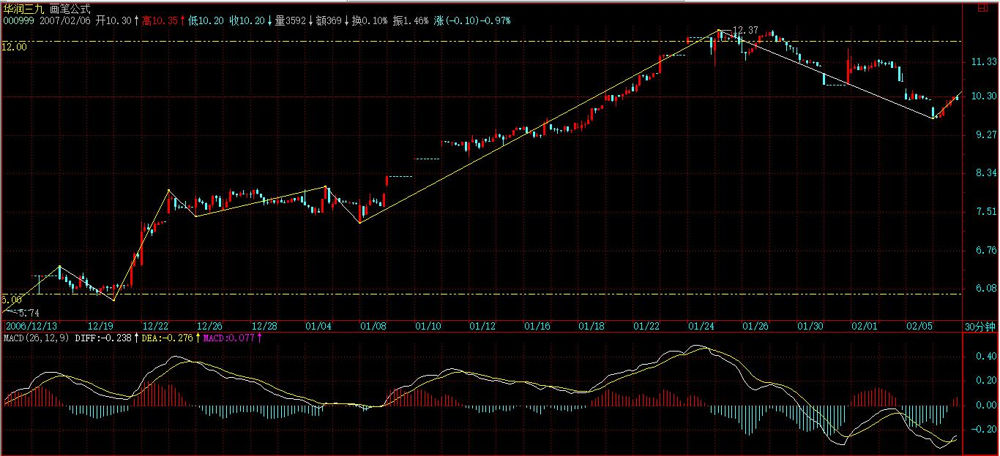

(2007-02-06 15:04:50)
基金，无论公募还是私募，说白了就是合法传销，本ID从来看不起任何基金，无论公募还是私募。理论上，只要这个合法传销无限延伸下去，那最开始的人肯定要多牛有多牛了。
很多人爱用巴菲特说事，所谓价值投资，其实不过是一种传销手段而已。股票，归根结底就是废纸一张，而其传销本性决定了，股票的所谓价值可以是这样一个完美的圈套，就是在股票所代表的公司上有1元的利润，在股票上就可以产生至少10元的增殖，这，无非就是资产虚拟化中的放大功能。
因此，任何一个空壳公司，理论上，只要能合法地发行基金，然后用这传销得到的钱部分地投在该空壳公司的资产上，就可以在股票上赚取10倍以上的增殖。
只要有钱，什么优质资产不可以买入注入？只要有钱，什么优质资产不被优先选购？然后，投资这股票的基金就挣钱了，然后新一轮的传销又开始了，如此而已。
任何不承认股票废纸性质的理论，都是荒谬的。任何股票，如果是因为有价值而持有，那都不过是唬人的把戏。
长期持有某种股票的唯一理由就是，一个长期的买点出现后，长期的卖点还没到来。站在这个角度，年线图就是最长线的图了，因为任何一个人大概也就能经历70、80根的年K线，一个年线的第一类买点加一个年线的第一类卖点，基本就没了。【韶山映山红】3K线中枢的时代，一个走势类型大概也就70、80根的K线。】
把握好这两点，比任何价值投资的人都要牛了，那些人，不过是在最多是年线的买点与卖点间上下享受了一番而已。【韶山映山红】把握好哪两点？★１，股票，归根结底就是废纸一张，所谓价值投资，其实不过是一种传销手段而已。２，长期持有某种股票的唯一理由就是，一个长期的买点出现后，长期的卖点还没到来。】
站在中国股市的现实中，这轮牛市的一个大的调整，必然会出现基金的某种程度的崩溃，上一次的牛市，让证券公司毁了不少，这一次牛市，毁的就是基金。【韶山映山红】上一次的牛市，为什么毁了不少证券公司？这一次牛市，为什么毁的就是基金呢？证券公司和基金也是利用市场捞金，也不是价值投资啊。虽然钱不是自己的，也可以进退有度啊。另外，上一次牛市为什么不毁基金？这一次牛市不毁证券公司？证券公司又学乖了什么？★可以做个专题，以后研究。】
投资的第一要点就是“你手中的钱，一定是能长期稳定地留在股市的，不能有任何的借贷之类的情况。”【韶山映山红】借贷也属于加杠杆。】
而基金，不过是所谓合法地借贷了很多钱而已，即使是没有利息的，性质一样。一旦行情严重走坏，基金必然面临巨大的风险，一次大的赎回潮就足以让很多基金永不超生。
传销，通常只有一个后果：归零。基金，至少对大多数来说，一样。这是基金一个最大、严重违反投资要点的命门：他的钱都不是他的。
对于开放式基金，这点更严重，因为这种赎回是可以随时发生的。而中国的开放式基金就更可怕，中国人的行为趋同性极为可怕，国人一窝蜂去干一件事的后果是什么，大概也见过不少了，无论政治、经济、学术上，无一例外。
由基金这个大命门，派生出一个必然的小命门，就是所谓的基金经理必然要以净值为标准，就像当官的以GDP为标准一样。
而基金又有一个当面首还要立牌坊的搞笑规定，一个基金拿某只股票是有一定比例限制的，也就是说，基金在这点上，连庄家都不如，一旦超配，唯一的办法就是找其他基金帮忙拉一把，几家基金一起持有，其实就是联合坐庄，【韶山映山红】“超配”，根据《公开募集证券投资基金运作管理办法》的规定，被俗称为“双十限定”的条款有两条：第一是一只基金持有一家公司发行的证券，其市值不能超过基金资产净值的10%；第二是同一基金管理人管理的全部基金，所持有一家公司发行的证券，其市值不能超过该证券的10%。】万一都超配了，或者一时各基金都无暇他顾，那就构成了一个很好的阻击机会。【韶山映山红】怎样阻击？砸下来，让基金被动超配，被迫低位减仓，抢筹，然后坐等基金自救的拉升？★可以做个专题，以后研究。】
站在本ID的立场上，基金就是傻大个，短差又弄不来，又不能随时护盘砸盘，他持有的实际效果，就是让股票的盘子变小了。【韶山映山红】基金持仓的实际效果就是让股票的盘子变小了。由此，股性更活跃了。再加上阻击力量，这样的股票更多机会？★可以做个专题，以后研究。】
就算不用一些非市场的手段、一些在中国肯定效果一流的桌底游戏，一次设计合理的阻击足以让这基金，轻的，吃点哑巴亏，重的，让他清盘走人。
注意，这市场是开放的，不是本ID心狠手辣，而是只要有命门，必然有人攻击，难道本ID不攻击，这命门就不存在？
和傻大个玩游戏，如果他能熬得住，大不了就弄了一次出色的短差，等于傻大个持有的筹码人间蒸发了一段时期，投资中，唯一重要的其实就是成本，成本比傻大个低，再起来时，傻大个就更危险了，一次搞不死，还不能搞两次、三次，总有搞死的时候。
一旦往下搞，基金的净值熬不住，那基金经理就可以走人了，然后，那些筹码就可以信达、东方一番了。【韶山映山红】“信达、东方”，指专门处理不良资产的四大国有金融资产管理公司（AMC）：东方、长城、信达和华融。1999年相继成立，由于政策性任务逐渐完成，2009年之后相继商业化转型。】
如果在一个大级别的，例如月线中枢的调整中，一个集中的攻击，打破一个点，把一个基金公司集中搞跨，所有的基金公司都将面临严重的赎回潮，然后就整个市场都可以严重地信达、东方一番了。
吃散户有什么意思呀，基金，就是散户打包，让人一口吃，少麻烦。
最近，一个小的周线中枢震荡，就足以让本ID去试验一下。一个20%都不到的回调，一个就算跌停也就5%的股票，一个基本面面临严重好转的个股，已经让某些人坐不住了。某些傻大个超配了，找人护也没人有空了，看看上周基金的净值，这种局面再维持一周，估计就有人熬不住了。【韶山映山红】八卦。哪一个股票？哪家基金？】
当然，现在的基金还有实力，一棍子肯定打不死的，这次只是闹着玩一次，感觉不错，最次就是权当洗了一次盘，弄了一个出色的短差。本ID可没在这次就把人击倒的想法，12元不行，难道不可以20元才搞死？只要短差出来了，死的一定是没弄短差的人！【韶山映山红】降成本是王道。】
本ID对散户可从来都很仁慈的，在高位已经严重提醒了要洗盘了，听不见可不是本ID的问题。
现在的股票，并不是每一个都有庄家的，基金成了越来越重要的阻击目标，这个目标是现实存在的，任何道德说教都没用，你不搞，还怕没人搞？
至于这个命门如何化解，如何不让这成为外国游资的重大突破目标，那就不可能是水平还在小学的管理层所能明白的。
对这种事情，本ID的态度一向很明确，不干白不干，干了白干，本ID只是按着技术提示来，买点买、卖点卖，任何有命门的，都可以产生利润，都可以抽血，为什么不可以玩玩？
有罪的不是本ID废了其命门，而是谁让如此的命门来招惹攻击？
市场经济，永远都是血腥的，这一切，都由资本的虚拟化所决定。一个虚拟的资本，就如同僵尸，不吃血，怎么活？对于这一点，必须有清楚的认识。
市场打开，就必然要面对各种攻击，如果管理层的智力还达不到攻击者的千分之一，那只有瞎闹的份。
下一个死的，一定是基金，在一个月线级别的调整中，这一幕必然上演，现在唯一有疑问的是，不会连一个周线级别的调整，都会有好戏提前上演吧？这个可能性是不大的，如果真出现，这基金也弱了。对于这么弱的对手，本ID是没兴趣了，对手越强越好玩。
投资，就当独行客，所有事情都自己去承担。
而本ID的理论，是一个客观的描述，和任何的主观分析无关，就如同阳光、空气，不管你是否认识，都存在着。不理解这一点，那是不可能明白本ID的理论的。
【韶山映山红】市场走势是客观的，市场分析是主观的。那么，缠论对市场的分析不是主观分析？和其他任何的主观分析无关？理论是一个客观的描述，运用理论做分析，是不是主观分析？★可以做个专题，以后研究。】
今天的走势十分标准规范，只要对本ID的理论有一点了解的，都不难找到这个5分钟背驰的底部。【韶山映山红】“这个5分钟背驰的底部”是30分钟下跌趋势的5分钟背驰。在5分钟图上做笔划分，三个笔中枢的a+A+b+B+c+C+d下跌趋势，b、c都有三卖点，没有背驰。d没有三卖，却结束了趋势。】
目前的事情很简单了，5分钟背驰，一个大的阻力就是2720，这是上次的低点，【韶山映山红】2720是前面30分钟向下盘整走势的低点，也就是30分钟级别的前低。这里的级别，前面高点下来是30分钟向下盘整+30分钟向上盘整+30分钟下跌趋势，形成日线回踩中枢，也就是“周线的第一段”。用K线图的周期做级别就是这样的问题，图形和级别不好对应。】
如果能上去，那周线的第一段就不会演化成下跌的趋势，一个2720上下的周线中枢将逐步形成，否则，就有在下面形成下跌的第二个中枢的可能，这样走势压力就比较大了。【韶山映山红】如果不能站上2720点，这个周线的第一段，下上下的日线回踩中枢，就会演化成一个30分钟级别的线段类下跌趋势，下跌力度就大多了。如果能上去，这个周线的第一段，逐步形成的就是一个回升的日线中枢，成为周线的第一段盘整，向下的力度当然小很多。】
但即使这样，只会导致30分钟或15分钟回抽后制造一个比这次5分钟更大级别的背驰，那次的回拉，级别就更大了。【韶山映山红】“即使这样”，是指“能上去”回到前低的2720，“周线中枢将逐步形成”。即使能上去也只是一个回抽，还会再下来完成中枢。怎么知道是“30分钟或15分钟回抽”？不会是5分钟的反趋势吗？★以后研究。】
个股没什么可说的，关键是操作的技术。这几天，本ID说过的股票里最极端的就是777和999了，如果你的技术能让你在这几天在999上的获利不比777差太远，那你的技术就有点谱了。
【韶山映山红】000777中核科技。】
【韶山映山红】000999三九医药，2010.02.24变更为华润三九。】
精通本ID的理论后，涨跌的分别就会消失，在里脑子里，只有买点卖点，没什么涨跌，达到这种境界，就算初步有成了。
2007-2-6 15:12
[匿名] abc 2007-02-06 15:14:43
请教ＬＺ关于昨天０００００２季线，为什么不考虑除权除息对价格的影响？
==
不考虑，不要夫权。【韶山映山红】填权也是一种力度考量。】
【韶山映山红】000002万科A。不复权。】
【韶山映山红】000002万科A。前复权。】

2007-2-6 15:16
[匿名] 曦月 2007-02-06 15:15:04
请楼主帮帮分析600343
15.8进的
怎么办啊？
是找个卖点卖了，重新进把成本降下来呢？
还是继续持有？
怕明天还跌啊。。
【韶山映山红】600343航天动力。】
==
为什么买那么高？要在买点买。15.8什么时候有过买点了？
有错误，就首先要改掉。今天有16元的位置就该出来，这么明显一个卖点怎么不出来？学好理论，以后坚持在买点买，卖点卖。
该股中线问题不大，短线有点压力。毕竟大盘跌那么多没跌，除非大盘其后攻上2720表现出强势，这样突破创新高才是比较稳妥的办法，否则现在贸然上去，大家高兴了，攻上去的人可苦了。本ID从来不学雷锋，只按市场规律办事。什么是市场的规律，就是本ID的理论。
2007-2-6 15:22
[匿名] 摄影之友 2007-02-06 15:21:09
尊敬的博主:谢谢你的新文章.我先顶后看.
今天我特意休假在家.早上先出了一些九药,后来运用了你的理论,在5分钟背驰时,在9.73元接入,做了一个小短差.心里不象昨天那样难受了(俺的货币今天也不难过了,止跌回暖了).谢谢你!~~~~
另:人寿我只有一小小部分在手里.是我用来练习做短差用的.
多谢你.亲爱的博主.真想在家看图做短差.这种感觉真好.
==
不用谢谢本ID，技术是自己的，关键是自己熟练，和谁都没关系。
2007-2-6 15:24
[匿名] 听缠说禅 2007-02-06 15:26:34
楼主，中国联通终于也动弹了，这次是30分钟的背驰我没有判断错吧？
【韶山映山红】600050中国联通。】
==
会买会卖才是完美的操作！
2007-2-6 15:28
[匿名] 老无用 2007-02-06 15:17:36
潜水多日，但一直在仔细阅读楼主的文章，有很多不明白的。今天楼主列举了数只经典股票的季、月线图来说明大底部的寻找方法，仔细研究了这些股票的季线，仍有很多不解之处。最大的问题是600640，按背驰信号的几个标准，该股03四季度已创新低，MACD面积显然小于前期，似应算背驰，当然黄白线与三季度比仍在小幅下降，但与前期比则明显未创新低，000001，000002，000006，000009等亦均是按相同情况判断背驰的。但该股在经历了一个较强的反弹后复大幅下挫，直至05年三季度见底，当然此处是一个明显的背驰，MACD面积比前期小，但同样此处的黄白线与上季度比仍在下降，唯一不同的是MACD柱子比上一季度缩短，但其他几只股票也有柱子不缩短的，如000001，000009等，这就给背驰的判断带来巨大困惑。另000012在底部时，MACD面积并未缩小，黄白线仍在下降，诸子长度亦未缩短，如何判断其背驰呢？是否还有其他研判标准，楼主还未及披露？
最后就是复权问题，两月前楼主曾戏言是反对夫权，所以不复权，后又说均可。但这两者有巨大差别，因复权后无新低可言，背驰研判失去前提。此类问题困惑心头日久，给学习和实战带来极大问题，诚望楼主给予解惑，谢谢。
==
你的图形是复权的？不要复权。对超长线，更没必要复权。短线有点必要，毕竟突然的缺口，使得一些指标有变化。但也只限于除权后的一定时间内。如果熟练，根本没必要复权。
2007-2-6 15:34
[匿名] 三藏 2007-02-06 15:31:52
楼主帮忙给解释一下缠中说禅趋势平均力度吧，理解不了。想了好久了。哪位同学知道的告诉告诉我啊！今天第一天来学习
===
用MACD，这样比较简单，要用本ID那个指标，必须自己制作一个指标，这样才好用，否则一般人用不好。
2007-2-6 15:36
[匿名] 听缠说禅 2007-02-06 15:26:34
楼主，中国联通终于也动弹了，这次是30分钟的背驰我没有判断错吧？
==
缠中说禅 2007-02-06 15:28:04
会买会卖才是完美的操作！
---------
[匿名] 听缠说禅 2007-02-06 15:39:01
楼主，你是否知道，为了学习你的理论，这次大盘震荡期间，一直跟着判断并实践着，但是因为本人愚钝，学艺不精，加之有时其他事物耽搁盯盘，我还是出现了一些失误和遗憾。中国联通倒是将成本降低了0.2元，已经很是开心了。在座的很多人估计没有几个能像罗锅班长那样20%的成绩，我很羡慕他啊！
===
成本降低就是成绩，从一种思维、操作到另一种，是一个艰难的过程，很多人会走回头路，贵在坚持。
如果不熟练，可以先降低操作资金。
2007-2-6 15:46
[匿名] 并不完美 2007-02-06 15:44:02
楼主的理论在工商银行上却行不通了:
无论是日线级别还是30分钟级别,从一月四号下跌的那天之前都未出现过背离,但跌幅却如此深和长?LZ的理论让我们避不开跌的风险,而从那天以后30分钟图上至少出现了2次的背离买入信号(一月15号10电左右及一月19号10点左右),但却在5分钟级别的K线上找不出合适的卖点,更谈不上达到前期的高位来产生顶背离了.希望LZ能让我们明白工商银行的特殊性,这样可以让我们在今后的操作中规避这类型的股票.谢谢
==
工行的问题以前已经分析，
那次在1分钟上出现典型的背驰，
这就是急速行情中最典型的特征，
1分钟背驰引发暴跌，
然后是一个下跌，两中枢，
然后一个三段的B段，
然后破底，到今天出现5分钟背弛，都十分标准。
好好先把中枢概念搞清楚。
2007-2-6 15:49
[匿名] 下下 2007-02-06 15:47:00
缠主，管子今天是怎么 回事啊，其它钢铁股都翻红了，他为什么选择今天调整也没反弹啊
【韶山映山红】000778新兴铸管。】

==
下跌得少，反弹自然少。
大家注意了
如果抢反弹，一般有两类是肯定没问题的，一就是指标股，不拉指标股，人气起不来，所以是必须拉的。二是跌得很多后背驰的，一个小反弹，就有10%几以上的空间。
大家一定要注意那些在第一段中不跌的，除非其创新高并很有力度，否则一旦大盘反弹结束，就有补跌的可能。这是必须注意的。
2007-2-6 15:53
[匿名] 三藏 2007-02-06 15:46:14
楼主帮忙给解释一下缠中说禅趋势平均力度吧，理解不了
想了好久了。哪位同学知道的告诉告诉我啊！
今天第一天来学习
===
用MACD，这样比较简单，要用本ID那个指标，必须自己制作一个指标，这样才好用，否则一般人用不好。
＝＝＝
好像很难啊。。。那么要用楼主的“趋势平均力度”这个指标的必要条件就是：1.首先要用MACD，2.自己制作一个指标。可是定义都没理解怎么做指标吗？能换一种表达方式重新解释一下定义吗？谢谢楼主了！！
==
不对，MACD就可以了，一般人没必要用本ID那个指标，那东西是精确，但用起来很麻烦，还要自己编指标，一般人根本弄不来，还不如直接用MACD，准确率差点，但只要结合好中枢、背驰，95%以上是一点问题没有的。这就足够了。
2007-2-6 15:55
[匿名] 我 2007-02-06 15:46:44
缠主，今天10:30分600016五分钟图是背驰吧！我小进了些，长得很好！为什么这个五分钟背驰能拉升这么多！ 【韶山映山红】600016民生银行。】
==
因为前面跌得多，而且是趋势，所以一旦结束，发生背驰，就很有力度。
并不是每次都有这种力度的，关键是板块对了，位置对了，而且是前期强势股，所以力度就大了。
会买一定要会卖，这才是完美操作。
2007-2-6 15:58
[匿名] 新手 2007-02-06 15:55:58
数学MM 才学不久你的理论~ 背驰用MACD辅助要是 红柱子怎么判断啊~ 谢谢回复
==
课程里都说的很清楚的，好好反复看。特别从中枢开始。
2007-2-6 16:00
[匿名] 老无用 2007-02-06 16:02:39
今天按楼主的背驰理论上午9：55发现600784的15分钟背驰，小仓为介入，单笔资金的获利率非常令人满意，请楼主点评我的判断对否？多谢！ 【韶山映山红】600784鲁银投资。】

==
可以，但会买一定要会出，如果数量不大，可以在小级别的背驰中出掉，回来再补，这样来回操作，技术才能练出来。
2007-2-6 16:07
[匿名] 悠悠悠哉 2007-02-06 16:05:51
老大 我觉得你是不是该惭愧一下啊？老大不做主力拉升，只愿吸血，就好比一个超级大的散户。别人在前面冲锋陷阵，老大享受成果，一旦苗条不对，撒腿就跑……如果大资金人人这样，市场永远没行情的。
==
市场不是慈善机构。该涨的时候要凶，像现在的777，
【韶山映山红】000777中核科技。】

该跌的时候一样要凶，像这几天的999，关键是你的技术。
【韶山映山红】000999三九医药，2010.02.24变更为华润三九。】

所以，本ID反复说过，技术不好的，千万别跟ID的股票，当然，跟本ID的股票，你的技术肯定能练得不错。
这些股票中线都肯定没问题，但短线的震荡，不正是技术派用场的地方？
2007-2-6 16:10
[匿名] 木香珠 2007-02-06 16:02:27
我的功课,希望得到禅主指点,别让我自以为是瞎琢磨,浪费时间和机会. 600028日线上,于1月19日将中继判断为转折,次日杀入,后将1月24日唇吻判断湿吻,因为看图不在熟练,在反弹过程中1月30日产生唇吻时,不及出清股票,结果股票一泻而下,昨天果断出清.本来可盈利10%,结果亏损10%,惨痛.今天从5分钟图上看,于1.55分第二买点时底位补进一点.
【韶山映山红】600028中国石化。】
==
有卖点不卖就是最大的错误，比有买点不买还要严重。
另外，请多看中枢等后面的章节，有了中枢后，前面的意义不大。
2007-2-6 16:13
[匿名] 学生古代 2007-02-06 15:46:44
老师学生感觉场外很多资金，一直在等什么？中国不会像数年前东南亚，但是太多狼一直盯着羊群！
==
为什么不能把自己变成狼，这和资金大小无关。只要你能买点买、卖点卖，就是最凶猛的狼。
2007-2-6 16:15
[匿名] 中间体 2007-02-06 16:00:31
请缠姐指出以下操作(及思路)的不对的地方.000407, 我很看好,日K线在第6段中枢的上升阶段,
【韶山映山红】000407胜利股份。】
今天收盘前, 1分钟线上, 红柱开始缩短, 5分钟即将开始背驰, 抛出1/3仓位.
但我还是很担心明天回立马涨上去, 按缠姐理论, 这又不可能, 请答复.
==
那是一个比1分钟级别还低的背驰，其实可以等1分钟走坏再说。出了就算了，千万别追高买回来，钱放着不会发霉的。等下一个机会，下一个有把握的机会。
2007-2-6 16:19
[匿名] 大河 2007-02-06 16:17:03
昨天看了LZ对火箭股份的回复,我以为它是形成了周线上的第三类买点,本知道今天上午大盘会跌,还是在开盘时候以18.35买入,结果跌了5个点,我是不是又错了,在低位17.17的时候我又不敢再补回来,因为它没有背驰,想问一下,我错在哪里呀,该股从2月1日9:35分到现在是不是还在一个盘整中?因为我看它尾巿五分钟上对应的红柱子减少了,是不是可以说它明天又要跌了,杨请问缠妹妹我是不是买在卖点上了
【韶山映山红】600879火箭股份。2009-10-30变更为航天电子。】
==
学了本ID的理论还像一般人那样抢开盘就是太无聊了。要学会耐心等待买点。
今天早上那价位是买点吗？后来砸下来反而出现一个短线买点，当时大盘也见到5分钟的精确买点。那时候才该进去，然后对冲出来或不出来，等1分钟卖点，都可以。
这样才能把成本降低，否则学本ID理论干什么？随便听一个说说就算了。要把这些追高或不在买点买、卖点卖的坏毛病改了，否则很难进步的。
还有，顺便说说，今天如果说追高买000938，都是有问题的，等买点，股票又不是什么，一定要马上拥有的，有买点再说。没买点，什么股票都是垃圾。
【韶山映山红】000938紫光股份。】
2007-2-6 16:26
[匿名] 老无用 2007-02-06 16:02:39
今天按楼主的背驰理论上午9：55发现600784的15分钟背驰，小仓为介入，单笔资金的获利率非常令人满意，请楼主点评我的判断对否？多谢！
==
缠中说禅 2007-02-06 16:07:50
可以，但会买一定要会出，如果数量不大，可以在小级别的背驰中出掉，回来再补，这样来回操作，技术才能练出来。
-------------
[匿名] 老无用 2007-02-06 16:26:10
谢楼主点评。我的疑问是为什么昨日下午也发生黄白线不创新低，股价创新低，也形成了两个下跌中枢，却不是背驰？【韶山映山红】600784鲁银投资。】
==
你不能光看一个级别的，必须把次级别的也看，才能发现精确买点。昨天说了，昨天那只是进入背弛段，而精确买点要看次级别的。

前把上一次课程再研究一下。大级别的道理，小级别也一样的。
2007-2-6 16:29
[匿名] 刻股铭心 2007-02-06 16:22:47
问一个最基本的问题 什么是吻啊 是短期均线和长期均线交叉吗 别笑话我
==
是，但这不重要，只是辅助，MACD，也一样的。关键是中枢，中枢分不清楚，幼儿园毕业不了。
2007-2-6 16:31
[匿名] 小鸟 2007-02-06 16:29:10
妹妹帮我看看600331在5分钟和15分钟图上，是不是应该还有一跌，跌破17.6形成15分钟背驰，现在还是在盘整？
【韶山映山红】601331宏达股份。】

==
这股票的5分钟背弛比大盘早，5号就有了。不要预测是否还有一波，卖点没出来就预测下一个买点，都是一种坏毛病。
目前5分钟的盘整能否突破，就看今后两天了。这种背驰后走成盘整的，关键是看能否突破上去回来形成小级别的第三类买点，如果行，就冲起来了，否则，最多还是盘整。如果是对冲的，可以看小级别来操作。
2007-2-6 16:35
[匿名] 后知后觉 2007-02-06 16:35:13
新生一个，对禅主的理论了解的浅显，但是对禅主个别章节的讲座、图形还能熟记与心，眼前浮现。在自己关注的股票池中，发现600495晋西车轴的日线蓝柱不再伸长，【韶山映山红】600495晋西车轴。】
就看了60分钟K线，同样蓝色柱子也在缩短。

看30分钟K线，蓝色柱子已经回0轴，
15分钟方向奔0轴。
再看5分钟K线，黄白线已经上穿0轴，并进行了两次回拉，
眼前浮现禅主讲的一幕，应该三次回拉，遂耐心等待，果然三次回拉后，蓝色小柱逐渐缩短，此时感觉是禅主说的买点了。
综合大盘，各股都在翻红，就21.7坚决杀入。买入后还上下小幅波动几下，几分钱级别的。收盘获利3％。
此举纯属幸运，还是不明白其中的道路。请禅主或各位同学根据K线结合禅主的理论做个此股的实例分析，这样有助于我的提高。劳烦禅主给予此股今后的操作指导了，谢谢了。
==
你确实有点碰巧，买的位置是买点与卖点之间的位置，并没有买在真正的买点上。真正的买点只有三种、第一、二、三类。不过这问题不大，早准卖点就可以了，例如看1分钟背驰找一个超短线的卖点，如果走势很强，可以找级别大一点的，反复操作，才有效果的。
注意，短线不是意味着不看大级别。既然大级别在一个明显的中枢里，当然应该多点短线把成本降下来。【韶山映山红】打短差的前提是大级别值得打。当大级别在一个明显的中枢里，就应该多打短差。】
2007-2-6 16:40
[匿名] 听缠说禅 2007-02-06 16:32:17
建议楼主每天出一个作业，第二天出正确答案，帮助大家对照自己的分析是否错误，错误在哪里，这样你的学生会整体提高快一点。
==
那可以，今天就用5分钟与1分钟的配套分析，把这次5分钟的背驰分析清楚。
这个问题，在实战中很多这里的人都当下找出来了，但事后分析一下，复一下盘，还是有意义的。
先下，晚上再来，再见。
2007-2-6 16:43
[匿名] 清 2007-02-06 16:41:00
等了很久很久。。没有看到回复。把问题再移过来
[匿名] 清 2007-02-06 15:24:38
先看后顶再问问题
能帮我看看600682S宁新百的走势吗。。大概一分钟和五分钟都发生背驰了。。但走势很弱。。是盘整背驰还是背驰呢？谢谢！【韶山映山红】600682 S宁新百，南京新百。】

还有一个问题。大概14:50分时，发觉不少股票都滞涨，那个一分钟图上，如何判断是否出现背驰而卖出呢？再次谢谢！
==
这股票，最大问题就是下来没形成两个中枢，所以没跌透。所以大盘反弹，背驰后就形成盘整走势。【韶山映山红】“形成两个中枢”，构成下跌趋势，才有可能“跌透”。否则，只是向下盘整，还会演化成更大级别的盘整。】
一般这样，最坏的情况，就是盘整后再跌一波，形成30分钟以上的背驰，才见到比较有力度的底部。【韶山映山红】小级别不能以下跌趋势的形式“跌透”，就会演化成更大级别的盘整，然后以更大级别下跌趋势的形式去“跌透”，然后形成“比较有力度的底部”。】
当然，如果大盘走势特别强，这背驰演化的的盘整也有往上突破的机会，并不必然向下。毕竟盘整后上升、下降都是正常的。【韶山映山红】趋势下跌是跌透的常态。盘整本身成为底部结构也是可以的。】
至于说今天有些股票没力，这是正常的，今天都有力了，那明天不就没股票反弹？而且反弹中，最有力度的肯定是指标股以及近期相应的板块，例如银行，这很自然，资金在里面。
注意，背驰后不必然出现V型反转，也可以形成盘整后再选择方向。所以为什么抢反弹都是必须跌透的，也就是至少两个以上中枢的原因。【韶山映山红】这里说的“V型反转”应该是趋势下跌+趋势上涨的结构，趋势背驰之后的转折，还有下跌+盘整+上涨。】
2007-2-6 16:51
作业
今天就用5分钟与1分钟的配套分析，把这次5分钟的背驰分析清楚。
这个问题，在实战中很多这里的人都当下找出来了，但事后分析一下，复一下盘，还是有意义的。
下了，再见。
晚上9点公布答案。
2007-2-6 16:52
对不起，有点其他事情，迟到了。
2007-2-6 21:33
[匿名] 酿酒制药 2007-02-06 21:09:59
缠姐好,哪个药还不出消息呢,不是一月底处结果吗?39太不讲信用了 【韶山映山红】000999三九医药，2010.02.24变更为华润三九。】

==
这就构成了这个阻击的一个外在环境，否则阻击还真不好弄。毕竟目前各基金的持仓总数已经超过50%，如果没有大盘的配合已经消息迟迟不出，向下阻击也不会轻易展开。所以，单纯技术还是不够的，必须多方面综合。
当然，如果是单纯的短差，就是另外一回事情了。为什么？因为在短差的时间内，其他因数基本都可以假设是恒定的，因此只考虑技术因数就可以了。
2007-2-6 21:37
水浴清蟾 2007-02-06 21:35:34
缠妹妹,什么时候放<1812年序曲>给大家听啊?
==
已经放过了，在前面的音乐会里有。如果喜欢，明天弄成博客的背景音乐。
2007-2-6 21:41
[匿名] 淡定 2007-02-06 21:17:04
楼主，还有一问题请教，象600050这样的股票，如果根据短线指标来做，很多时间来回差价交手续费还差不多，那如果站在中线的角度该如何降低成本呢？盼答，多谢了！
==
没人让你整天按1分钟的指标用，5分钟的肯定比手续费多多了。
而且，这还有综合看，如果是在30分钟跌势的背驰段，那一分钟的背驰可能就构成那精确的底部，这时候就不能够因为是1分钟的而忽视了。
2007-2-6 21:47
[匿名] 努力学2 2007-02-06 21:42:09
继续我的笨问题：
博主原文或回帖
=================
缠中说禅走势分解定理一”：任何级别的任何走势，都可以分解成同级别“盘整”、“下跌”与“上涨”三种走势类型的连接。
=================
而这也回答了上一章中的作业一“连接两相邻同级别缠中说禅走势中枢的一定是趋势吗？一定是次级别的趋势吗？”首先，这不必然是趋势，任何走势类型都可能，最极端的就是跳空缺口后形成新的“缠中说禅走势中枢”；其次，也不一定是次级别的，只要是次级别以下，例如跳空缺口，就属于最低级别，如果图上是日线、周线，就不会是次级别了
======================
问题：我理解的走势分解是不交叉但首尾相接(看了博主举的例子也是这个意思)— 闭区间[X1,Xn]=[X1,X2]+[X2,X3]+...+[Xn-1,Xn]。我的困惑在于：中枢相连部分为什么不一定是次级别的。
按定义，中枢由三段次级别完成的走势重叠部分构成，那么在次级别走势图上，两个三段走势之间也必然是0个或多个完成的走势，否则和前面的定理冲突。假如两个三段走势之间没有另外走势，那么它们首尾相连，也就是说跳空前的那根K线既属于前面中枢的最后一段走势，也属于后面中枢的第一段走势。我的理解哪里出偏差了？
==
你好好看看都市股份的1分钟图，就知道为什么了。连续的涨停只构成1分钟中枢的上移，而缺口是比1分钟还低的级别。其间连5分钟的中枢都不能形成。
【韶山映山红】600837都市股份，2007-07-31变更为海通证券。】
2007-2-6 21:52
公布作业答案，各位请参考：
上次因一个5分钟的顶背弛创造出2980点的高位，从该位置开始，是一个5分钟级别的下跌过程。共形成三个下跌的中枢：第一个1.30 10:55到1.30 13:45，第二2.01 11:05到2.02 11:10，第三2.05 10:05到2.05 13:30。
【韶山映山红】5分钟图上的划分。】

【韶山映山红】1分钟图上的划分。】
【韶山映山红】1分钟图上笔、线段初始化的划分。】
其中第二个中枢，是跌破一个大的30分钟以上级别中枢的次级别回拉，构成一个第三类卖点。【韶山映山红】这个“30分钟以上级别中枢”不知道是哪个。★以后研究。】
而从MACD开，从第二个中枢开始的一段，与从第一中枢开始的一段，力度上也没有特别的减少，所以这时候就是特别小心会产生第三个中枢。【韶山映山红】a+A+b+B+c趋势，b开始的一段对a的力度没有明显的偏弱，就可能不只是两中枢的趋势。】
一般来说，从第三类卖点下来的一段，除非力度特别弱，跌破中枢后马上拉回，否则都不会构成真正的背弛，也就是说相应的次级别背驰只造成一个下跌中枢。【韶山映山红】“从第三类卖点下来的一段”，如果没有本级别的线段类盘整背驰，一般来说都不会构成真正的背弛。换句话说，a+A+b+B+c趋势背驰的标准形态有两点：c对b有中枢盘整背驰，c3对c1有线段类盘整背驰。】
从第三中枢开始的下跌，从1分钟图看，明显弱于从第二中枢开始的那一段，这从MACD上回来0轴后的下跌能明显看出。
更精细的分析，今早的杀跌有两波，为什么第一波不是，因为1分钟是被看到的最低一个图，如果要发现比1分钟还低的精确走势，可以单纯参考1分钟MACD的柱子对比，这时候黄白线一般都是远离0轴，然后形成绿柱子放红后再次放绿，但绿柱子比前一波要小，但股价创低，这其实构成了1分钟的次级别的背弛，如果有1秒图，这就能发现了。
因此，今早第二波的下跌，通过5分钟背弛段的1分钟背弛段的次级别的背弛这样的三重背弛的类似数学分析中的区间套定理的精确定位，所以就很容易把握到了。
如果不明白区间套定理的，可以找一本数学分析的书看看。或者再研究一下第27课的内容。
2007-2-6 22:14
[匿名] 努力学2 2007-02-06 21:56:38
缠中说禅
你好好看看都市股份的1分钟图，就知道为什么了。连续的涨停只构成1分钟中枢的上移，而缺口是比1分钟还低的级别。其间连5分钟的中枢都不能形成。
================
那么除去缺口这种情况，是否中间的连接段一定是次级别走势？还是我对分解的理解有误？
=
也不一定，但肯定是次级别以下的。
2007-2-6 22:16
大家注意了
现在对大家的要求是对背弛的精确定位，如果有可能，是可以达到1分钟的次级别的精确度的。这次大盘的下跌就是一个很好的例子。
方法很简单，例如这次是5分钟的下跌。因此在5分钟进入背弛段后，找1分钟相应段的背弛段，再找1分钟背弛段的背弛段，这样就可以精确定位了。

找1分钟相应段的背弛段，

再找1分钟背弛段的背弛段，这样就可以精确定位了。

这个方法有点难度，尽量去理解吧，如果以前学过区间套定理的，应该很简单，或者先找一本数学书看看？
2007-2-6 22:21
补充一点
例如，在5分钟图上，2.05 13:30开始就是第三个中枢开始的下跌了，一般来说，一个下跌最多就是3、4个中枢，超过4个的极为罕见。
这时候就要看相应的从2.05 13:30开始的1分钟图。整个下跌必须有两个1分钟的中枢，显然02.05 14:10到02.05 14:36这一个只是第一个，所以其后的下跌，显然不可能构成趋势上的背弛，这同样也证明了为什么今早第一波不是的道理。


2007-2-6 22:26
[匿名] 努力学2 2007-02-06 22:26:02
缠中说禅
也不一定，但肯定是次级别以下的。
===============
实在不好意思还没明白，还麻烦老师详解：中枢由三段次级别完成的走势重叠部分构成，那在次级别走势图上，两个三段走势之间也必然是完成的走势段(跳空除外)，否则和分解定理冲突。（缠中说禅走势分解定理一”：任何级别的任何走势，都可以分解成同级别“盘整”、“下跌”与“上涨”三种走势类型的连接。）
是不是我理解的分解不对（不交叉但首尾相接）？[X1,Xn]=[X1,X2]+[X2,X3]+...+[Xn-1,Xn]
==
跳空的级别是无限低的，不构成任何中枢中的一段。这和分解定理没有什么矛盾的。上涨、下跌都是完成了的走势类型，是比中枢以及连接中枢的要大的概念，不要搞混了。走势类型的级别只与其中包含的中枢有关。例如，包含一个日线中枢的走势类型，那一定是日线级别的盘整，包含两个以上日线中枢的，那一定是日线级别的趋势。这和连接中枢的走势级别无关。
2007-2-6 22:31
[匿名] 荷塘月色 2007-02-06 22:30:40
缠姐看看600151，感觉5分钟不像背驰，两段趋势的面积好像一样大啊，
【韶山映山红】600151航天机电。】
但30分钟像在走中枢，估计又好像要跌一下，明天要不要先走，待跌后再接回？？
==
5分钟没背驰，是1号的1分钟背驰造成本次上涨的。并不是说5分钟的上涨就一定是5分钟的背驰造成的，1分钟的背驰，通过中枢的扩展等最终形成比5分钟、甚至是日线的上涨，都是可能的，600151这次的回升就是这样构成了。有关这种情况，以后会详细论述的。
2007-2-6 22:35
[匿名] 不在潜水 2007-02-06 22:35:21
楼主，有一问题请教。
前提：上升过程形成的日线中枢
问题： 有没有可能在形成日线中枢的30分钟走势的第三段，没有形成5分钟背驰，而由一个一分钟背驰形成向上或先形成盘整再突破盘整向上的走势而结束30分钟的第三段向下的走势？ 或者还是必定要出现5分钟背驰才能结束这第三段走势？
谢谢！！
==
完全可能。【韶山映山红】完全可能没有本级别背驰，而是次级别以下的小转大。】
5分钟的背驰至少制造一个5分钟的走势类型，但还可以制造更大级别的，但这都要通过中枢的扩展完成。因此，一个1分钟的背驰，当然也可以构成大顶或大底。【韶山映山红】小级别背驰制造更大级别的走势类型，都要通过中枢的扩展来实现。】
其实这个问题已经说过，想想工行、北辰的例子，都是1分钟顶背驰造成大顶的绝好例子。为什么？就是后面发生了中枢的逐步扩展。
2007-2-6 22:38
例如，今天大盘5分钟的背驰制造出一个5分钟的三段走势来，也就是说，这个反弹就此结束，在理论上也是成立的。因为已经达到5分钟背驰所能制造的最低级别走势要求。【韶山映山红】“5分钟的背驰制造出一个5分钟的三段走势来”，所以这里的5分钟段约等于5分钟图上的一笔。也就是说，这是一个30分钟的三中枢下跌趋势。】
那么，其后反弹的继续依靠什么？就不是背驰的力量了，要靠中枢的延伸与扩展等手段。
背驰是制造底部，制造第一类买点的，而中枢扩展、延伸是制造第二、三类买点的。【韶山映山红】二买在这里又模糊了。29课讲的是反弹的第一段的回踩形成二买。之前的二买是新走势的第一个中枢的最后一次回踩。★以后研究。】
有关这些问题，比较复杂，以后的课程还多着了。
太晚先下了，再见。
2007-2-6 22:43
缠中说禅 2007-02-06 22:26:51
补充一点
例如，在5分钟图上，2051330开始就是第三个中枢开始的下跌了，一般来说，一个下跌最多就是3、4个中枢，超过4个的极为罕见。
这时候就要看相应的从02.05 13:30开始的1分钟图。整个下跌必须有两个1分钟的中枢，显然02.05 14:10到02.05 14:36这一个只是第一个，所以其后的下跌，显然不可能构成趋势上的背弛，这同样也证明了为什么今早第一波不是的道理
--------------
[匿名] 中间体 2007-02-06 22:40:44
但以后的下跌也没有形成中枢啊.
==
今天的9:51到10:08，构成1分钟上的中枢，也是第二个。该中枢的第三段，是很弱的那种，这在快速走势上很常见的，已经多看图就能分辨了。

太晚了，下。再见。
2007-2-6 22:46
【网文】真实的谎言（二）巴菲特&伯克希尔收益率的迷雾
Sosme（2015-5）--“关于巴菲特有个研究的盲点提供给大家：如果巴菲特按2%+20%的标准提取管理费用，他的收益会是多少？我很感概费用对收益的侵蚀”；“这也许是研究费用侵蚀收益的经典案例”。
收益率对比
关于巴菲特&伯克希尔的话题，一直是投资界的热门内容，但是这些话题就像sosme所说的有一些误区和盲点，特别是关于收益率-费用方面。2015年5月份做了一个分析表对此进行了简单对比分析，结果出来后很出人意料。格顿群的群友AndyZheng兄在此基础上又进一步完善了这张分析表，这次再加进了巴菲特1957-1964年共8年做私募阶段（1965年完全收购了伯克希尔）的收益数据，得出的结果更加震撼：

60年后的收益差距：从62739倍塌缩为3001倍，仅剩4.78%，差距20.91倍！
表格说明：
1、巴菲特&伯克希尔1957-2016年共60年的投资年收益率原始数据来源于网络资料，并假设巴菲特管理合伙企业期间采用和伯克希尔同样的管理模式（即未计提收益分成）；
2、年初按上年底余额一次性计提2%的管理费；
3、年收益为正时，计提20%分成；
4、1956年底投入1000元本金；
5、对比表里的所有数据不一定100%精准，但对于要分析的主题来说已经能够满足。
一、巴菲特&伯克希尔1957-2016年共60年的总投资回报为62739倍、年平均复利20.2%。统计表中把这个时间段分成了两段，其中1957-1964年（表中白底部分）为巴菲特私募合伙人阶段，这8年的总投资回报为6.1倍、年平均复利27.7%；1965-2016年（表中蓝底部分）为巴菲特完全收购并入伯克希尔后的阶段。之前个人对1965-2014年有数据分析，引用如下：这50年的总投资回报为7518倍、年平均复利19.7%；同期标准普尔指数总投资回报为112倍、年平均复利9.9%。老巴和他的伯克希尔真的是很牛了！达到的高度后人难以超越。
二、在加入“按2%+20%的标准提取管理费用”变量后，情况发生了戏剧性的变化，巴菲特&伯克希尔1957-2016年共60年的总投资回报从62739倍断崖式剧降为3001倍，只有前者的4.78%！差距20.91倍，缩水幅度高达-95.22%。前8年缩水幅度为-45%，虽然也很恐怖，但比起后52年-95%的缩水幅度，还是小巫见大巫了。尽管个人有心理准备，清楚变量都是假设，但面对这样巨大落差的数据，还是不禁想到了那句话---客户的游艇在哪里？……
三、再看年复利方面，加入“按2%+20%的标准提取管理费用”变量后，1957-2016年60年平均复利从神奇的20.2%下降到14.3%，同比下降幅度为29.2%。高大上的巴菲特&伯克希尔将会走下神坛，虽然绝对仍算投资大师，只是难再如此耀眼。
四、如果1956年底一位卓有远见的客户投入1千元，到2016年的60年时这位有天眼通的客户的1千元变成了6270余万元的巨款；假如每年提取2%+20%的费用，时间倒是一点没少，但钱就只剩下300万元了，就是前面数字的一个零头多点。代客理财的投资机构巧取豪夺地拿走了客户5974万元的真金白银，本来的100元钱只剩下4.78元，土豪有向屌丝转化的趋势。
五、假设美国股市的长期平均回报为10%，巴菲特&伯克希尔60年投资历史中有11次落后于市场回报（平了1次），其中有2年亏损，81.4%的时间战胜市场；假如每年提取2%+20%的费用，低于市场回报的次数翻了一倍多变成24次，亏损年份变成3年，战胜市场的时间只有60%。如果是作为积极进取型的世界顶级专业投资机构，4-6开的成绩单在风险-收益方面就难说了。
六、分析到这里，情况已经很清晰了，结果真是一个在天堂、一个在地狱：如果把上面所述基金对客户按惯例额提取管理费用的因素加进来，伯克希尔在2016年时的60年总投资回报其实早在1993年就可以实现，整整延后了23年。23年的黄金岁月……人生能有几个？时间及机会成本…耽误时间就是谋财害命，从这个逻辑上讲，基金约定俗成的高额费用提取是否也算一种变相的“谋财害命”呢？sosme曾感叹说：“传统基金就结构而言是个有些邪恶成分的组织…”，一针见血！
对目前传统基金的反思
浏览一下国内目前的传统基金，在扣除费用上的思路和国外同行并无二致，甚至有过之而无不及，真是天下乌鸦一般黑。假设某只基金2015年的资金规模是5亿，预设的平均年收益率目标是15%，封闭10年。要达成这个15%的年复利目标，今后5年该基金需要赚得5亿进账，而10年则需净赚15亿才能满足15%年复利目标的要求，这对基金管理人来说无疑是一个极大的挑战，甚至可能是无法完成的任务。基于此，基金公司提取高额管理费用就有了“坚实的理论基础”---高收益需要高分成。
传统基金作为整体本身并不创造价值，甚至是大规模损毁价值。Vanguard 基金的创始人John Bogle认为，基民与股民散户相比，几乎同样愚蠢。基金行业作为一个整体，它们本身就是大市，它们怎能跑赢自己呢？除去买卖基金的费用，以及基金本身的各种费用，这个行业当然也只能跑输大市。在全球经济增长放缓，企业回报率下降的当今世界，每年多出1％或者2％的费用率简直是一个吃人的数字。Bogle说，不管基民们是赚还是赔，费用可是刚性的。
基金行业的从业人员们绝大多数很敬业，智商高，也很诚实，但作为一个整体，他们不创造社会价值，也不为基民们创造价值。Bogle 自己做了大量调研，也引用了大量权威机构和人士的研究。比如，他引用了耶鲁大学基金会首席投资官大卫斯文森的研究，在多如蚂蚁的基金中，只有约4%的基金在过去20 年扣除税收和费用之后能够跑赢大市，而且平均起来也只是比大市的回报率多了0.6%而已。而96%的基金跑输大市，并且跑输的很厉害：平均每年跑输 4.8%。大家都知道基金经理和券商有发财的，可是发财的基民却很少听说过，Bogle如是说：“我突然想起一个例子，挖黄金的人不见得赚钱，但生产和销售铲子和铁锹的人可以大赚其钱。”
传统基金业的这种潜在行规是一种不折不扣的霸王合同，它令人厌恶地利用了投资者的无知和信息不对称，“赢了是我的，输了是你的”，靠着不断疯狂吸取投资者来之不易的投资资金，过着寄生虫般的生活。2015年上半年5千点还在发行募集新资金的基金，它们发行的逻辑究竟是什么？真的是想帮客户赚钱吗？还是怀着某种不可告人的目地？
可怜的普通投资者，在这场金钱博弈战争中，是一个完全的弱势群体，毫无反抗余地，甚至从头到尾根本就不知道自己的利益被严重侵害了，还在乐此不疲地加入和配合这个剥削自己的金钱游戏。基金公司的日子确实很好过，因为一旦你把钱交给他们管，你不太容易抽逃。抽逃有费用，也很麻烦。而且你敢说下一个基金公司（或者基金经理）的水平会高出很多吗？况且，在你抽逃的同时，另一个基民（投资人）也许会把钱从别的地方转过来（就象公共汽车一样，有的人下车，有的人上车）。他转过来的原因可能是他对原来的那家基金公司极为不满，所以想在这家公司试试运气，你们俩正好换了个位置。这才是天网恢恢，疏而不漏。
基金投资者们，是时候问一句：“是谁动了我的奶酪”了！
结语
在本文的最后，引用sosme在《巴菲特批判》文章中的一段话作为结语：
“巴菲特批判”的实质是“自我批判” ！严格而言巴菲特理念只属于巴菲特本人，我们所理解的巴菲特理念只不过是我们的“自以为是”而已，我们通过各种途径所理解并形成个人意识的巴菲特理念与真实的巴菲特理念是两个不同的概念，我们的“自以为是”可能是不完整的、有缺陷的、甚至是错误的。只有一半是事实而另一半却是人们的观点，批判的目标不是那一半事实而是另一半我们的观点。“巴菲特批判”的内涵就是对“个人的巴菲特理念”进行持续的过滤及修正。我得出关于巴菲特思想的第三个也是我认为最重要的批判：巴菲特思想的核心不在于它本身（它的成功已无需论证），而在于我们对它的认知程度。
Sosme----2007年《巴菲特批判》
本文作者：格顿投资的研究员王强
-----------------------------------------------------------------------------------
特别感谢格顿群友AndyZheng兄，为本文立论基础的对比表进行了细致修正，提供了《复利表》及其它宝贵的帮助！
· 已收录至专栏 ·
sosme的原创专栏
2017-07-10 17:43
我认为不用这么黑化基金管理行业。这个世界没有基金管理行业，也不会变得更美好。基金想要钱，就要按钱的意图行事，钱想在5000点买基金，基金就要在这个点位发行。责任不全在基金，这是基金和客户组成的傻瓜群体，Couple! 基金对客户，不存在黑与不黑。 这只是个行业，行业就是这样。对于收管理费，无可厚非，世界上有什么是不收费的呢？？？如果要算，那我们再算算，一家公司100年当中交了多少的税，如果没有税，公司的市场会是多少？？我相信，肯定会有超乎想像的差距！，难道也要说政府黑？？？？
结论是，钱，不是一个人赚的。
(2007-02-07 15:06:37)
目前正被大张旗鼓所谈论的富人“原罪”，不过舆论垃圾化的惯性矫情。
站在大的角度，真正有“原罪”的是资本主义制度本身，只要资本主义制度存在，富人的“原罪”就不可避免。而目前谈论的所谓富人的“原罪”，是在承认资本主义制度的合理性上的，这样的讨论，毫无意义，不过是以承认一个更大的罪恶来把一个小罪恶忽悠一把而已。真正要消灭富人的“原罪”，唯一的可能就是消灭资本主义制度本身，除此之外，都是废话。
而最大的原罪，就是使得资本主义制度出现的人。如果真有这个人存在，那这人就是最大的罪人。可惜，资本主义制度本身，并不是由哪个人去确立的，不是因为吃了什么果子突然而有的，因此，那可以背负一切罪恶的罪人，那最大的替罪羊，就没有了。
秋后算帐、打土豪、分田地，这都没问题，这一切不过是这样一种游戏，既得利益者用各种手段忽悠既得利益能被继续既得下去，而当这个极限被突破后，游戏玩不下去了，然后就换成秋后算帐、打土豪、分田地的另一款游戏。
所有的问题，都不过在这极限是否突破上。所有类型的资本主义社会，如果一定要在同样的罪恶上分出个三六九，那么，这极限就是一个标准。
然而，无论极限突破与否，都不可能救赎资本主义的一丁点罪恶。罪恶是无可救赎的，只能连根拔起。
有些资本主义的卫道士不断忽悠这样的逻辑：贫富差距拉大，但贫者的生活水平也在提高。
按这种逻辑，只有贫者生活水平不断下降，富者生活水平不断上涨才是可指责的。这是一种什么逻辑？典型的屁股决定脑袋的香蕉逻辑。
按这种逻辑，奴隶社会当然是美好的，因为奴隶比类人猿要生活得好，后者只能吃到香蕉，而前者可以去种香蕉；资本主义社会就更美好了，最差的人，也可以生活得比香蕉更不像香蕉，所以资本主义就是最伟大的，这就是香蕉逻辑的香蕉套路。
要把资本主义的罪恶连根拔起，就要把资本主义的现实支点连根拔起，而首先要把资本主义意识形态的所有香蕉逻辑连根拔起，让资本主义的香蕉逻辑吃蕉去吧！
即使是资本主义引以为豪的市场逻辑，也是千疮百孔的，找到其命门，攻击之，瓦解之，迫使其改变之，这都是切实可行的。
资本主义不会因为无聊的道德批判而毁灭，所有维护资本主义社会制度本身的一切上层建筑，都是有命门的。连数学，都不可能完美与完备共存，又有什么现实的资本主义上层建筑可以是完美与完备共存的？
在资本主义的现实逻辑中，以其之矛攻其之盾，合法地将资本主义逻辑的悖论现实化、危机化，就是加速资本主义灭亡的催化剂。
资本主义经济运行的轨迹，就是一个大型的股票走势图形，道理是一样的，阻击资本主义，和阻击庄家、基金的道理是一样。只要找准命门与时机，就会让他大大危机一把，就如同庄家、基金被阻击后大大地跳水、崩盘。
在资本主义经济轨迹的年级别中枢震荡上出手，让1929年重现，这就是1929年的90年周期到来时最有意义的事情。
这个周期是不以人的意志为转移的，2019年的周期点是否如期还是提早，就和资本主义经济大运行的年级别走势下次级别运行有关。
资本主义的逻辑命门就在于，完全可以用资本主义的法律所承认的合法手段击毁资本主义，让他年线大调整，1929年化，强迫其改变基础的现实逻辑。
而这一切都不是天方夜谈。预测风雨而逃避风雨，只是小人之所为；当然也不是让暴风雨来得更猛烈些，那同样是小人之所为。而是风其风、雨其雨，利用资本主义的一切漏洞主动出击，让其风雨飘摇。
摧毁一样东西，不是一味的打压，而是当他疯狂时让他更疯狂，当他堕落时让他更堕落，在折腾中抽干他的血，这种事情，当然不是一个人能干完的，而每一个人，只要在其中抽一滴血，资本主义就离僵尸更进一步了。
资本主义，如同股票，就是废纸一张。资本主义企图用虚拟的、现实的经济迷幻来奴役人，那么，就要有人利用这种迷幻经济来抽干资本主义的血。而这种人，必须洞穿资本主义的所有现实逻辑漏洞，比资本主义更魔鬼，用资本主义的方式杀死资本主义。
对资本主义的攻击，不能光停留在哲学、文化等层面，经济上的黑客，击毁庄家、击毁基金、击毁资本主义，同样是这资本主义的现实之网所必然存在、不可缺少的。
补充：
各位注意了，学前班毕业前，最好多看少操作，中线拿着就可以了。
学习本ID理论的学历标准：
精通找出各级别中枢的，是幼儿圆毕业
精通分别中枢的新生、延伸、扩展的，是学前班毕业
精通分辨盘整背驰与背驰，躲过盘整背驰转化为第三类买卖点的是小学毕业
各位自己对照一下。
【韶山映山红】“躲过盘整背驰转化为第三类买卖点”，说明中枢离开段的盘整背驰正常情况下会返回中枢区间，转化为第三类买卖点的情况属于特殊情况，并不是常态。】
大盘今天的走势没什么可说的，
就是在形成一个5分钟级别的新中枢，一旦这中枢形成，就会构成一个第二类买点，然后还有1波上攻，至于最后是否形成，本ID不是算命的，自己看图操作就行。 【韶山映山红】这里说的二买，是趋势背驰之后，新走势的第一个中枢的最后回踩点。下一课开始，二买提前到了趋势背驰之后第一个反弹段的回踩点。同时，一直到第一个中枢的最后回踩点，之间的所有回踩点都算二买。★】
由于2720是所谓双头的颈线位置，所以这里必然有一个多空的换手过程，这就是在这里形成中枢的一个心理上的因数。
2007-02-07 15:07:52
[匿名] 小明 2007-02-07 15:12:11
缠mm，从1分钟图上看很有可能形成一个1分钟的背驰啊？ 怎么回事？
==
这背驰早上11点不已经有了？十分标准的。【韶山映山红】线段内部的线段类盘整背驰。】出现以后，第一波的上涨就结束了，【韶山映山红】三段向上的盘整。】现在是一个5分钟中枢的震荡，看能否形成第二类买点。

2007-02-07 15:17:09
[匿名] 长大 2007-02-07 15:29:27
老板，你什么时候入的000938，好象昨天没有通知！ 【韶山映山红】000938紫光股份。】
==
前天晚上说的吧，本ID说股票，一般都在回贴里。
没买就算了，千万别追高买。股票多了去了，学会本ID的方法，满地都是好股票。
2007-02-07 15:31:58
[匿名] YW 2007-02-07 15:31:44
关于938,LZ前天说:"注意该股基本面上有坏消息，大家都等着坏消息出来吃货，技术不好的，就别碰了。" 言下之意好象是最近该股将有利空消息出来,随后将下跌,暂时先不要吃它,待其跌下来以后再进,然后可等其上涨.--- 可是昨天和今天好象都没有坏消息出啊,该股这两天连续上涨,今天下午又直接拉至几乎涨停.难道是我理解错了??
===
今天就有坏消息。【韶山映山红】内部关于股份有各种谍战片宫斗剧，太乱，不深挖了。】
另外，看股票还要看走势，今天早上怎么明显的第三类买点，好好看看30分钟图。 【韶山映山红】笔误。后面有更正，是5分钟图。】

2007-02-07 15:33:26
小糊小舞 2007-02-07 15:37:18
只能看楼主回答别人的答案了。。。
==
你有什么问题？太快，经常看漏，对不起了。
2007-02-07 15:40:28
[匿名] YY 2007-02-07 16:05:46
缠mm看看那根管子，一个大的收缩三角形，后面会突破吗？
【韶山映山红】000778新兴铸管。】
==
该突破的时候就突破了。你看他这次基本没怎么跌，不可能现在就贸然上去，到时候谁在上面举杠铃？
2007-02-07 16:08:04
[匿名] 炼铁设备 2007-02-07 16:06:12
5分钟的买点是白黄线跌破0轴后再回抽0轴，并穿越0轴，是这样吧？
白黄线不跌破0轴，只是在0轴上回轴（向下再向上），这是否算5分钟的买点？
请你指教下，谢谢
===
先学好如何分析走势，MACD只是辅助的。
2007-02-07 16:08:51
[匿名] YW 2007-02-07 15:31:44
关于938,LZ前天说:"注意该股基本面上有坏消息，大家都等着坏消息出来吃货，技术不好的，就别碰了。" 言下之意好象是最近该股将有利空消息出来,随后将下跌,暂时先不要吃它,待其跌下来以后再进,然后可等其上涨.--- 可是昨天和今天好象都没有坏消息出啊,该股这两天连续上涨,今天下午又直接拉至几乎涨停.难道是我理解错了??
===
缠中说禅 2007-02-07 15:33:26
今天就有坏消息。另外，看股票还要看走势，今天早上怎么明显的第三类买点，好好看看30分钟图。
----------------
[匿名] 赚到了 2007-02-07 15:44:59
第三类买点?我也是那时买的,可是还有点疑惑,11:10时10.5已经触及中枢(10.32-10.55)了,这样也算吗?
==
打错了，是看5分钟的，11点多的是一个很标准的5分钟级别的回试，而下面是一个复杂的30分钟的中枢，并没有触及。

2007-02-07 15:50:19
[匿名] 满目山河 2007-02-07 15:48:27
晕，睁大眼睛看着000938等下跌呢，还想还涨上去了。
缠妹妹，这股票走得很怪啊，没看到第三类买点啊。【韶山映山红】000938紫光股份。】
==
今天11点多的时候，一个很标准的5分钟回试对30分钟中枢。
2007-02-07 15:51:29
声明
刚上来，发现下午所有回帖都没有了。这里受到攻击甚至最后被关闭都是很正常的，因为这里的存在至少会让庄家、汉奸等等很不高兴，当然，在现实中，本ID是不怕他们的，他们能找的人，本ID也能找，他们想玩什么游戏，本ID都可以陪他们玩，但在虚拟的空间里，这一切就很难说了，最主要是本ID暂时不想抛头露脸。
最近这里捣乱的人越来越多，这都是很正常的，本ID没义务也没兴趣去制止或干涉他们，在本ID这里，爱怎样都可以。不过，如果真想学习的，就快点把这里的帖子都复制下去，说不好哪天这里被汉奸给删了，也一定不奇怪的。各位看着办吧。
【韶山映山红】前面的那些问答是通过其他人引用缠师问答恢复的。还有多少遗失，就不得而知了。】
2007-2-7 20:33
把今天对大盘的评价重写
5分钟背驰引发的5分钟上涨在今早11点后的1分钟背驰中结束，然后进入一个5分钟中枢的震荡，
该震荡后能否构成第二类买点，有待今后两日的走势，无须预测。
本ID所言个股，777无须多论，其他因前期抗跌，在大盘确认真正站稳前，盲目突破是冲动的。
【韶山映山红】600777新潮实业。2016-07-06变更为新潮能源。】
至于前晚说的000938，有人说本ID有阴谋，本ID的阴谋只是让各位挣点钱好安心学习，就如同6元说999，8元说777一样。没买的千万别买，免得像那些6元不买999，12元才买还算在本ID头上说本ID坏话的。
今天之后，谁买938的，自己负责，别在这里嚷嚷，爱胡闹的，各位就看着办吧。【韶山映山红】000938紫光股份。】
2007-2-7 20:43
下午的回帖不可能再一一来过了，各位先看吧。关键是自己学好本事，就算是本ID也靠不住的，例如，这里突然被删掉了，那就不可能再找到了。
学习，快点小学毕业吧，然后是初中、高中、大学、硕士、博士、博士后等等，这样，才是真正的立足。
如果这里被删，就是和各位的缘分到此了，本ID唯一可以承诺的，就是只要这里不被删，本ID还会尽量发帖子，只此而已。
2007-2-7 20:51
[匿名] 尽快赶上来 2007-02-07 20:51:46
刚上来，发现下午所有回帖都没有了。这里受到攻击甚至最后被关闭都是很正常的，因为这里的存在至少会让庄家、汉奸等等很不高兴
------------
这么好的博，应该大家都来看看，学习再学习，新浪敢做这些事，我一定天天电话投诉，没事就打。
对了，博主这么厉害，博主也说现在国家在金融方面很是欠缺，为何博主不在这方面给国家提一些建议呢？这应该比赚钱更有感觉！
==
你也太天真了，事情哪里有想的那么简单，国家又不是本ID开的，想干什么就什么。就算是身居高位的人还有制衡的问题，没有人是完全不受牵制的。
2007-2-7 20:57
股票换房 2007-02-07 20:54:04
股市提款的BLOG:缠中说禅--跳梁小丑，有什么资格与罗杰斯叫板？ 2007-01-28 16:29:16
报告锅贴班长这个被缠主吸干精血的面首,在恶毒攻击缠主, 希望你带领大家去扁他.
==
没必要，别人爱说什么就让他说去，关键要抓紧时间学到真工夫，在市场上把他们的血吸干。
2007-2-7 20:59
[匿名] 并不完美 2007-02-07 20:42:49
我终于小学毕业了,有没有高级课程?
==
初中以后的会有的，但先把基础打好吧，关键是实践中能熟练运用。
2007-2-7 21:02
这帖子到这里了，请去最新的声明帖子里问问题。
2007-2-7 21:11
(2007-02-07 21:02:45)
刚上来，发现下午本ID的所有回帖都没有了。这里受到攻击甚至最后被关闭都是很正常的，因为这里的存在至少会让庄家、汉奸等等很不高兴，当然，在现实中，本ID是不怕他们的，他们能找的人，本ID也能找，他们想玩什么游戏，本ID都可以陪他们玩，但在虚拟的空间里，这一切就很难说了，最主要是本ID暂时不想抛头露脸。
最近这里捣乱的人越来越多，这都是很正常的，本ID没义务也没兴趣去制止或干涉他们，在本ID这里，爱怎样都可以。不过，如果真想学习的，就快点把这里的帖子都复制下去，说不好哪天这里被汉奸给删了，也一定不奇怪的。各位看着办吧。如果这里被删，就是和各位的缘分到此了，本ID唯一可以承诺的，就是只要这里不被删，本ID还会尽量发帖子，只此而已。下午的回帖不可能再一一来过了，各位先看吧。
关键是自己学好本事，就算是本ID也靠不住的，例如，这里突然被删掉了，那就不可能再找到了。学习，快点小学毕业吧，然后是初中、高中、大学、硕士、博士、博士后等等，这样，才是真正的立足。
各位有问题请问，10点本ID要下了。
2007-2-7 21:12
把今天对大盘的评价重写
5分钟背驰引发的5分钟上涨在今早11点后的1分钟背驰中结束，然后进入一个5分钟中枢的震荡，该震荡后能否构成第二类买点，有待今后两日的走势，无须预测。
本ID所言个股，777无须多论，其他因前期抗跌，在大盘确认真正站稳前，盲目突破是冲动的。至于前晚说的000938，有人说本ID有阴谋，本ID的阴谋只是让各位挣点钱好安心学习，就如同6元说999，8元说777一样。没买的千万别买，免得像那些6元不买999，12元才买还算在本ID头上说本ID坏话的。
今天之后，谁买938的，自己负责，别在这里嚷嚷，爱胡闹的，各位就看着办吧。
2007-2-7 21:14
[匿名] 笨笨猪 2007-02-07 21:15:32
这里要是关了，还可以去国外的blog啊，比如MSN，现在提供空间的还不是到处都是。还是预先做个准备吧。
而且如果用MS office 2007，直接在word 2007里面就可以发布文章，不用登陆网站，比这里还方便。
==
本ID对电脑不大清楚，只会用。
如果这里被删，也就意味着缘分到了，那本ID很有可能就走到前面来了。虽然暂时还不想露面，但如果真发生这种事情，那也无所谓了。
2007-2-7 21:19
缠中说禅 2007-02-07 20:51:46
刚上来，发现下午所有回帖都没有了。这里受到攻击甚至最后被关闭都是很正常的，因为这里的存在至少会让庄家、汉奸等等很不高兴
-------------
[匿名] 戈石 2007-02-07 21:18:55
难怪下午明明看到了女王的回帖晚上回来却看不见了，但请女王放心，您所有的正帖我全都分类收录，甚至您的所有回帖我都已编辑成《教科书》，现《教科书》已编辑成初级、中级、高级三本300多页。
==
谢谢
2007-2-7 21:20
[匿名] 满目山河 2007-02-07 21:16:50
缠妹妹，要不我留个邮箱，把学习内容发一份，可以吗？
==
对不起，本ID都是随写随发的，没有新的，都在这里了。自己复制一下吧。
2007-2-7 21:21
[匿名] 笨笨猪
还是留下点火种，看到的人可以联系一下，通通气。
另外博主的股票的文章和点评，我觉得有价值的，都已经copy下来了，有的还配了图，改了错别字。想要的人可以发email到 berniezhu＠sina.com
2007-2-7 21:31
－－－－－－
[匿名] wsmrzw
我建立了一个qq股票群，欢迎大家进驻交流35568420
2007-2-7 21:21
==========
你们那网址的没用，等一下就当广告给删了，这好象是自动的。对本ID下午那些肯定是人工的，否则不可能那么精确的。
2007-2-7 21:23
[匿名] 笨笨猪
已经有一个群了 17056661
2007-2-7 21:36
[匿名] 拜读者 2007-02-07 21:20:09
缠MM~
首先感谢你的理论~ 我是新手 有幸能在学股票的初期遇到你~
你说的小学毕业的标准我已经知道了~ 正在努力~
但初中、高中、大学...的标准呢？
至少要让我有个目标啊~ 谢谢回复~
==
现在还说不了，因为有些概念还没说到。在本ID这里小学毕业，对比外面的人已经很厉害了。
不过可以告诉你，例如，到了硕士，可以开些专门的班，例如怎么坐庄，还有如何阻击庄家等等。【韶山映山红】这里是缠师唯一明确硕士课程的地方。“专门的班”，“怎么坐庄”，“如何阻击庄家”。】
2007-2-7 21:25
[匿名] 诚诚 2007-02-07 21:24:46
亲爱的LZ:强烈谴责那些胆小的庄家和软骨头的汉奸!我们都支持你对他们予以痛击!
再想请教一个问题:30分钟背弛下来的下跌,反弹后的卖点要在同一级别还是下一级别找?谢谢!
==
你的问题表达不大清楚，一般，按本ID的术语，30分钟背驰就制造了一个至少30分钟级别的第一类卖点，如果这30分钟级别的卖点刚好在日线的背驰段，那就同时也是日线的第一类卖点。【韶山映山红】这里说的是30分钟上涨背驰之后的卖点。】
背驰出现后，首先会有一个5分钟级别的向下走势完成，然后有一个反抽，一个5分钟级别的向上走势，【韶山映山红】第一个向下走势的级别可能低于5分钟。重点是反抽有“一个5分钟级别的向上走势”。】注意，这些走势都不一定是趋势，盘整也可以的。第二个5分钟的背驰就构成了第二类卖点。【韶山映山红】因为使用“背驰”这个词来描述，所以要强调一下，“不一定是趋势，盘整也可以的。”】
第三类卖点，一般是没有马上形成下跌形成一个盘整，最后盘不住了，跌破中枢，次级别反抽不上中枢后形成的。【韶山映山红】这里说的三卖点，不是上涨趋势最后一个中枢的三卖点，而是上涨背驰之后的、向下走势第一个中枢的三卖点。】
因此，对卖货来说，最好还是在上涨中抓住背驰，这样的技巧要求当然很高，但其效益与回报也是最高的。要达到这，必须进行艰苦的学习与实践，没有捷径。【韶山映山红】努力做一卖。】
2007-2-7 21:33
缠中说禅 2007-02-07 20:51:42
下午的回帖不可能再一一来过了，各位先看吧。关键是自己学好本事，就算是本ID也靠不住的，例如，这里突然被删掉了，那就不可能再找到了。学习，快点小学毕业吧，然后是初中、高中、大学、硕士、博士、博士后等等，这样，才是真正的立足。
如果这里被删，就是和各位的缘分到此了，本ID唯一可以承诺的，就是只要这里不被删，本ID还会尽量发帖子，只此而已。
-------------
[匿名] 白玉兰 2007-02-07 21:18:30
某些人太无耻了。。。
[匿名] 白玉兰 2007-02-07 21:27:02
禅妹妹你到哪里我们支持你。。。
能否有一些保护措施呢？
==
不要带地址，会被删除的。
2007-2-7 21:35
[匿名] 酿酒制药 2007-02-07 21:34:36
缠姐好!这里人气正旺,大家都在努力学习.希望缠姐能够坚持,我们支持你!!!
==
只要这里不被删，那没问题。
2007-2-7 21:36
[匿名] 白玉兰 2007-02-07 21:38:29
有点象白色恐怖。。。
不要怕，星星之火可以燎原的。。。
禅妹妹，我们一直会支持你的。。。。
我是在上海的东北人。。。
有用得着的说一声。。
==
谢谢，估计是一个恐吓，这也太小儿科了，这群人还真不知道本ID的厉害。
说实在，现在的庄家、基金经理，基本都是本ID的后辈，他们年龄可能比本ID大，但资历就差远了，这些事就不说了。
2007-2-7 21:44
[匿名] 并不完美 2007-02-07 21:25:41
601600路安,是一个大牛股,从日线上看它的中枢是向上的奔走型的调整.我以小学毕业的成绩向大家汇报这只股票...哈哈!!
我把它从12月4号到今天都算在一个大的中枢里,LZ这样对吗?是否体现了中枢的精神呢
==
601600？有这股票？本ID怎么找不到的？
【韶山映山红】这里笔误。601699潞安环能。601600中国铝业，2007-04-30上市。】
2007-2-7 21:48
对不起，本ID要下了。
现实中，本ID当然可以找人警告一下某些人，不过这样就会让本ID抛头露脸，所以暂时没必要了。希望这些人看到声明，收敛一下，别把脸撕破了，把虚拟空间现实化，那就不好玩了。
那些在阴暗角落的人，看着办吧。
下了，再见。
2007-2-7 21:54
(2007-02-08 15:08:59)
子曰：唯上知与下愚不移。
杨伯峻：孔子说：“只有上等的智者和下等的愚人是改变不了的。”
钱穆：先生说：“只有上知与下愚的人不可迁移。”
李泽厚：孔子说：“只有最聪明的和最愚蠢的，才不改变。”
详解：
本章字面简单，却曲解多多。其中的“与”是解释的关键，上面三位和通常的，都把“与”解释成“和”，但这只是一个后起的意思。“与”的本义是“赐予”，原来是指朋党之间相互协作、相互赐予，因而引申为“结交、亲附”。
站在儒家的立场上，“上知”就是君子，“下愚”就是小人，为什么？因为没有“上知”，不可能成为君子。
儒家最注重智慧的，而智慧的获得，与“圣人之道”的“见、闻、学、行”是一体的。“见、闻、学、行” “圣人之道”必须达到不退转的位次，才可能有真正的智慧，也就是“上知”的呈现。
要不退转，必须彻底穷源，“学如不及，犹恐失之”，“不及”就谈不上“上知”，而没有“上知”，也成就不了真正的“君子”。
而“小人”，将人自小之，与世漂移，浮萍无根，何谈智慧？
对于人来说，最大的愚蠢就是这“将人自小”，“小人”就是真正的“下愚”。
君子为什么要“与”小人、结交小人？
因为君子都是从小人而来，从小人转化而来，任何人，在没有“见、闻、学、行”“圣人之道”之前，都是小人，都曾自小之。
“圣人之道”，是大道，不是私道，永远活泼、当下地呈现，即使没有孔子，“圣人之道”也不会被掩盖，而任何人，只有“见、闻、学、行”“圣人之道”，才可能得到真正的智慧、才可能转小人而成君子。
君子，不可能与小人为敌，而是要去结交他们，对其“小人”之相“不相”之。
但一般的人，如果没有达到不退转，在与“小人”的结交中，就会面临上一章的情况“唯！女子与小人为难、养也。近之则不孙，远之则怨”。
因此，站在现实的立场上，孔子还是主张“远小人”，特别小孩子，一定不能交给小人“教育”，否则后患无穷。
但真正的君子，不单单要出于污泥而不染，而且更要赴汤蹈火，于恶世恶人中“见、闻、学、行”“圣人之道”，不如此，无以成就真正的不退转，也无以使得“人不知”的世界转化成“人不愠”的世界。
“唯”，这和上章不同，表示希望、祈使的意思，这是孔子对所有立志成为君子的人的希望与期许。
“上知”，具有真正智慧的君子，达到不退转的位次，在任何情况下都能“不移”，当然也包括“与小人”的情况，也只有通过“与小人”历练，才可能成就真正的不退转。
“不移”，不改变、不退转的意思。
缠中说禅白话直译
子曰：唯上知与下愚不移。
孔子说：愿真正“见、闻、学、行”“圣人之道”的君子，结交、亲附没有智慧、充满贪婪、恐惧的小人而成就“见、闻、学、行”“圣人之道”的不退转。
（待续）
严禁抄袭，违者必究
大盘没什么可说的，就是昨天说的在这里形成一个中枢，今天下午拉起一波，构成5分钟图上的盘整背驰，这个5分钟的中枢就像30分钟的中枢扩展。【韶山映山红】现在的5分钟中枢延伸扩展成30分钟中枢。】
明天还要继续完成确认这个中枢，【韶山映山红】“继续完成确认”30分钟中枢。】如果看不明白中枢的，就看2720点，有效站稳该点前，震荡依旧。

一旦中枢确认，【韶山映山红】30分钟中枢确认。】而又出现30分钟次级别以下的背驰后站稳2720，【韶山映山红】形成a+A+b，b背驰在2720之上。】那么新1波上扬就出现，但2850上压力比较大。【韶山映山红】双头的头肩顶，右肩突破的压力。】

但对于个股来说，大盘并不太重要。大家也看到了，今天本ID的某些个股很兴奋，这是正常的，在大盘震荡中，突破一下有好处，至少大盘如果突然走坏，但回跌的空间与震荡的差价就可以出来了，而大盘一旦走好，追涨的也会比较踊跃。这些都是手法问题，但注意，本ID最鄙视追涨的人，任何追涨的人，本ID都乐于让他有点教训。追涨，一点技术含量都没有，有本事的就在第一、二、三买点买。第一、二、三卖点卖。
今天是温柔的浙江人的忌日，【韶山映山红】000777中核科技。】
本ID有一个令无数庄家闻风丧胆的坏毛病，就是一旦一只阻击的股票到1倍升幅以后，本ID一定找一个机会把手里的货出掉一半，然后本ID的成本就是负数了，后面，怎么玩本ID都肯定是赢家。
不过777的题材还在，中线还是有很大空间的，只是本ID的负成本计划在999之后又一次胜利完成，当然要立字为据。
2007-2-8 15:10
有人将本ID所搞的详细列了出来，这样也好，本ID的怎么样，阻击点都是根据本ID的理论来的，回头一看，有目共睹。
[匿名] 罗锅 2007-02-08 10:43:16
数学妹妹的前5只股票，12月中旬说的：000999、【韶山映山红】000999三九医药，2010.02.24变更为华润三九。】000777、【韶山映山红】000777中核科技。】000600、【韶山映山红】000600建投能源。】000778、【韶山映山红】000778新兴铸管。】600777。【韶山映山红】600777新潮实业。2016-07-06变更为新潮能源。】
元旦后说的三只：000915、【韶山映山红】000915山大华特。】000416、【韶山映山红】000416健特生物，生产脑白金。2008-01-06变更为华馨实业，2008-12-30变更为民生投资，2014-04-14变更为民生控股。】000099。【韶山映山红】000099中信海直。】
1月下旬说的：600343、【韶山映山红】600343航天动力。】000998、【韶山映山红】000998隆平高科。】600649、【韶山映山红】600649原水股份，2008-05-12变更为城投控股。】600578、【韶山映山红】600578京能热电，2013-10-10变更为京能电力。】600432【韶山映山红】600432吉恩镍业。】
前两天的：000938 【韶山映山红】000938紫光股份。】
注意，这些股票基本都说了很长时间了，有些都快1个半月了，所以离本ID的买点都很远，因此不建议任何人再参与了，学会了本ID的理论，有什么股票找不出买点的？那才是最关键的。
不过，本ID搞的股票，最终都翻倍，那是问题不大的，否则本ID搞他们干什么？有些肯定还不只一倍，这也是肯定的。当然，这都是从本ID的买点算起的，没买的，千万别追高了。自己找去。
本ID在用翻倍变负成本法慢慢套回资金后，不再阻击小家伙了，准备阻击一个大家伙，可以公开说，中国联通。【韶山映山红】翻倍变负成本法。套回资金开新仓。】
【韶山映山红】600050中国联通。】
现在本ID还没怎么进场，有很少的一点底仓，是今天出777换进去的。注意，本ID这是打打仗，而且联通不和别的，本ID可暂时控制不住走势，大家千万别跟着买。
2007-2-8 15:17
[匿名] 小鸟 2007-02-08 15:16:11
妹妹，千万不要离开我们，今后我们绝口不谈股票了，好不好？
只要这里能保留下来，让我每天有个看望的地方，不谈股票也很好呀，听妹妹的《论语》也是我人生最大的收获呀！
==
马照跑，舞照跳，用革命的粉色恐怖对付汉奸的白色恐怖。
2007-2-8 15:19
[匿名] 小明 2007-02-08 15:17:39
今天的777可是好玩了
有个问题不太明白，该股应该属于江苏的，怎么总是说是浙江人。该公司的大门我还经过好几次 呵呵
老大，5个手指夹一物今天走的也不错啊。我买了点。 不知道后面会不会来个斩立决啊？
==
名字当然是有理由的，道理就别问了，反正大家知道是谁就可以。【韶山映山红】000777中核科技】
2007-2-8 15:20
[匿名] 满目山河 2007-02-08 15:24:57
==
马照跑，舞照跳，用革命的粉色恐怖对付汉奸的白色恐怖。
------
呵呵，想起缠妹妹的钢琴曲了，这句话和钢琴曲表达的内容有点象。对了，你那钢琴曲有一段听着很烦躁。
==
那是声音转换得不好，如果是现场，效果好多了。
还有，有人说要听1812，这两天太乱，今天已经弄成背景了，好好听吧。
2007-2-8 15:31
[匿名] 呼呼 2007-02-08 15:31:46
我再强强的问一下，这个问题：：：：：
[匿名] 呼呼 2007-02-08 15:18:40
我弱弱的问个问题：是不是不管大盘，还是个股，所有的缺口，都在回补一下？？？
==
这问题以前已经回答过，不一定，就像325点上海的大缺口，94年的，现在还没补。
2007-2-8 15:35
[匿名] 中间体 2007-02-08 15:29:51
今天缠姐出了50万股777, 看来还有50万股在里面.
==
谁告诉你本ID只出了50万股的？别瞎猜这些无关的问题。关键是自己学好。
2007-2-8 15:36
[匿名] 小明 2007-02-08 15:17:39
今天的777可是好玩了。有个问题不太明白，该股应该属于江苏的，怎么总是说是浙江人。该公司的大门我还经过好几次 呵呵；老大，5个手指夹一物今天走的也不错啊。我买了点。 不知道后面会不会来个斩立决啊？
==
只要不追高就行，本ID不喜欢追高的人。
2007-2-8 15:39
[匿名] 插班生 2007-02-08 15:37:58
楼主好,中枢的划分还是不行,都是走势完美闹的.能把今天大盘的中枢解说一下吗?很多时候,您一说,就看明白了,但要自己来找就糊涂了.
==
从昨天11点后背驰开始，下上下，看5分钟图或30分钟图，都很清楚的。
2007-2-8 15:41
注意，大家别心急，帖子太快，本ID根本回答不过来。
请耐心点。
2007-2-8 15:42
有些简单的问题，请知道的帮助一下回答，例如这种：
[匿名] 长大 2007-02-08 15:42:41
老板，请问“5个手指夹一物”是何代码？谢谢！【韶山映山红】000600建投能源。】
2007-2-8 15:43
[匿名] 满目山河 2007-02-08 15:19:50
缠妹妹，请教一个问题：昨天600160 五分钟背驰，今天怎么又强势上涨了？给分析一下，该股有搞头（力度）吗？ 【韶山映山红】600160巨化股份。】
==
背驰走了一定要找机会补回来，没人说背驰了以后一定下跌50%的，特别是大级别上涨里的小级别背驰，很多情况下就一个盘中回档就完成了。要综合地看。
2007-2-8 15:47
[匿名] 小牛 2007-02-08 15:45:53
请问说禅妹妹:比如日线级别的背弛一定会有次级别甚至次次级别的背弛吗?我在昨天把000919在上午卖了 我觉的是一个一小时的背弛,后来下午涨上去了,我是不是把盘整背弛看成卖点了.【韶山映山红】000919金陵药业。】

==
昨天上午创新高了？小时图上好象昨天下午最后一小时才创新高的。
对60分钟的精确把握，要在进入背驰段后，关注15、5甚至1的走势，这样才可能把握住精确的位置。还要好好学习。
2007-2-8 15:51
[匿名] 小糊小舞 2007-02-08 15:29:35
报告楼主，我只是用语言小小支持了你一下，他们居然封我IP！！！强烈鄙视！！！
==
没必要管他们，懦夫才玩那些游戏的。
2007-2-8 15:58
[匿名] 新股民 2007-02-08 15:57:46
缠妹妹好，帮我看一下600220江苏阳光如何走法，我很困惑。我问你多次了，急盼你能回复我啊。多谢了。等待中.....【韶山映山红】600220江苏阳光。】
班长你能不能帮我看看啊，我感觉缠妹妹好像很忙的。我一点也不懂，多谢了。
==
走得很好呀，中线应该没什么问题。就是等待突破时机了。
2007-2-8 15:59
[匿名] 铁弹子 2007-02-08 15:37:00
缠MM:昨天请教了中枢的问题，未见答复，有同学给俺判了分，将俺打回重读幼儿园小班了，郁闷啊！
就说今天的5分钟K线，振荡逐步收紧，我的理解该中枢应该是：MAX的低点和MIN高点，那么就形成很窄的一条中枢，这样理解对吗？
俺可是认真看了大作了椰。。。
==
不一定很窄的，MAX的低点和MIN高点是对的，一般看前面三段，后面的不是围绕震荡产生的延伸，就是扩展。要分别对待。【韶山映山红】分别对待前三段和后面的延伸。】
一般来说，中枢中比较复杂的就是三角形或矩形了，这以后会说到。
2007-2-8 16:03
[匿名] 外科医生 2007-02-08 16:01:22
老大，好郁闷。为何大涨的时候我总是空仓啊
==
为什么前两天背驰的时候不买？
关键是对走势的理解还不深，“学如不及，犹恐失之”。
2007-2-8 16:05
[匿名] 缠文观止 2007-02-08 16:00:38
俺多问几次，是理论问题，不是个股问题，向MM请教：
上涨、下跌、盘整三种基本走势，有六种组合可能代表着三类不同的走势：
陷阱式：上涨+下跌；下跌+上涨。
反转式：上涨+盘整+下跌；下跌+盘整+上涨。
中继式：上涨+盘整+上涨；下跌+盘整+下跌。
如果一个下跌走势完成（出现背驰），则其后只有上涨、盘整两种可能。那么上涨与下跌应是同级别的，而盘整要比下跌高一级别吧？
下跌走势完成（出现背驰），是否意味着：下跌至少包含两个同级中枢，而下跌走势完成后接着出现的同级中枢肯定与下跌走势的两个中枢是反方向的？否则紧接着再出现同级同向中枢，成下跌延续了（暂不考虑发生中枢扩张情况）。
两段同级别趋势背驰后为何一定会出现一个反向的同级别走势类型？而且至少回到两个趋势间的盘整走势的中枢里？要是有个严格的证明就好理解多了。
用均线区间面积表示力度，显示背驰，是严格的定义还是一种参考呢？
还有，发生中枢扩张后的各种走势组合，能详细讲解一下吗？
缠MM什么时候能对中枢进行进一步专题分析啊，好多细节想不清楚，很难完全解决背驰问题。
==
你现在理解的很多概念都是错误的，例如，5分钟级别背驰后，肯定出现至少5分钟级别相反的走势类型，不一定是5分钟的。
另外，关键力度的问题，以前都回答过了，就是要编一套新的指标，这是最精确的，但一般人根本不行，所以用MACD就可以了。
其他问题，主要是你还没把前面的内容消化好。
好象同级别的问题，应该前几天已经回答过了。
简单说，中枢是走势类型里的概念，上涨+盘整等是不同走势类型的连接，不是一个层次的概念，先搞清楚。
再好好研究吧。
2007-2-8 16:14
[匿名] 中间体 2007-02-08 16:15:34
问缠姐一个很要紧的问题.第二类买点是不是看中枢的地三段,而第三类买点看中枢的第一段.对吗?
===
不完全对，【韶山映山红】不完全对，也就是说，比较对，但是还有错误的成分。那么，对在哪里？错在哪里？★以后研究。】
次级别上涨后，【韶山映山红】“次级别上涨”是下跌趋势背驰后的第一个次级别反弹段。】第一次次级别回调构成的第二类买点，其后肯定有利润，【韶山映山红】这是标准定义的第二类买点。二买意味着下跌趋势背驰后的同级别反弹，也就确保至少还有一段次级别向上，所以其后肯定有利润。】但经常会演化成大级别的盘整，【韶山映山红】趋势背驰的一买并不等于本级别的V型反转，跟随一买出现的二买也不能进一步证明什么。这里说的大级别盘整，既有下跌中继的中枢扩张，也有更大级别转折走势的底部构造。】特别在一些超级底部里，【韶山映山红】转折走势的底部构造不断震荡，有可能演化成很大级别的底部构造，成为超越本级别的更大级别的底部。】所以那时候就要看这中枢的演化情况，根据中枢次级别的走势来决定大型中枢的第二类买点。【韶山映山红】缠师在这里拐弯了，没有顺着问题讲本级别的二买、三买，而是讲更大级别的二买。也就是说，底部震荡的过程中，要根据次级别走势的不断演化，开始做本级别的同级别分解，在此基础上划分更大级别的二买。】这时候，实际上是本级别趋势背驰之后，本级别中阴中枢演化出更高级别的中阴中枢。】而第三类买点和第二类买点在判断上唯一不同的就是，第三类买点的中枢级别比下面突破那中枢要小。【韶山映山红】因为演化成大级别的盘整，超级底部，所以这里说的二买是高级别的，而突破底部中枢的三买仍然看本级别三买，所以第三类买点的中枢级别比下面突破那中枢要小。】
关键这些具体的区别，以后都会详细说到的。
路还长着了。
2007-2-8 16:31
[匿名] 巴索林 2007-02-08 16:26:37
LZ，你前天不是说以后每天给我们布置一道作业吗？我们等你下一道作业很久了。。。。
===
好的，但这功课今天不能公布答案，因为明天要说这个问题。
大家注意了，今天的功课来了
一个5分钟的下跌背驰后，其后的回升至少能到什么位置。给出相应回升位置的一个分类，相应确定回升的力度。【韶山映山红】29课就讲这个回升位置的分类，以及回升位置所确定的回升的力度。这个确定和背驰买点一样，也是一种当下的确定。】
2007-2-8 16:36
[匿名] 清 2007-02-08 16:24:03
其实问的主要原因是往往在小级别的做短差，因为调整幅度如果不大，又快速拉升，往往错过买入机会，或出现帮证券所打工的结果。所以想搞清楚小级别如何判断背驰，即使在回抽0轴后，出现了新高，而MACD图上面积却同前比较减少，但立于当下，如何判别会否在下探后再次拉升，而使后面的面积增大而大于前面（回抽0轴前的面积）。
谢谢。希望解疑！
==
这个问题其实多次回答了，小级别的背驰要发挥大作用，第一种是在大级别走势的背驰段里，否则，小级别的背驰不会引发大级别的反转，当然也不会产生太大的影响。【韶山映山红】第一种情况是小级别背驰引起大级别转折，大级别转折带来大幅度的波动。】第二种情况，在急促的走势里，小级别的背驰往往反转的幅度特别大，这也是特别值得关注的。例如工行元旦后的见顶，北辰、酒类股等，都是这种情况。【韶山映山红】第二种情况没有大级别的背驰段，是小级别离开走势的背驰转折，转折级别虽小，幅度却很大，也可能引起更大级别的转折。】
【韶山映山红】级别与幅度的关系。正相关，及其特例。可以做个专题，以后研究。】
【韶山映山红】小级别“急促的走势”出现后，一旦背驰，要么小转大，要么小级别大幅度的转折。怎么研判？可以做个专题，以后研究。】
2007-2-8 16:41
[匿名] 中间体 2007-02-08 16:15:34
问缠姐一个很要紧的问题.第二类买点是不是看中枢的地三段,而第三类买点看中枢的第一段. 对吗????
===
不完全对，次级别上涨后，第一次次级别回调构成的第二类买点，其后肯定有利润，但经常会演化成大级别的盘整，特别在一些超级底部里，所以那时候就要看这中枢的演化情况，根据中枢次级别的走势来决定大型中枢的第二类买点。而第三类买点和第二类买点在判断上唯一不同的就是，第三类买点的中枢级别比下面突破那中枢要小。
关键这些具体的区别，以后都会详细说到的。路还长着了。
------------------
[匿名] 中间体 2007-02-08 16:40:03
谢谢, 是不是可以肯定, 第三类买点的中枢级别比下面突破那中枢要要大的话, 就不是第三类买点了.
==
那当然，这就演化成中枢的扩展或走势延伸中的新中枢等情况了。【韶山映山红】第三类买点的中枢级别比下面突破那中枢要大的话，就演化成中枢的扩展或走势延伸中的新中枢。这里的走势延伸是指中枢移动。】
2007-2-8 16:42
本ID要下了，晚上有时间再上来，再见。
2007-2-8 16:43
本课目录
教你炒股票28：下一目标：摧毁基金《货币战争和人民币战略》续三声明《论语》详解：给所有曲解孔子的人（51）子曰：唯上知与下愚不移。